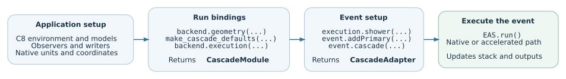

Application integration
The air-shower application creates the C8 environment, models, observers and
process sequence. The application interface binds those objects to an execution
path and exposes the event through EAS.run(). This chapter follows that
connection from the call in main to the code that starts a cascade.
Note
Source baseline: d5297c43. The following pages describe the current implementation. Code excerpts are included directly from repository files, with their original identifiers and source line numbers. Paths are relative to the project root.
Source file map
The selected files below follow the call chain described in this chapter. Paths start at the repository root; each filename links to the source baseline recorded above.
The public headers in corsika/kokkos/application/ declare the application
interfaces and data types. Template implementations are under
corsika/detail/kokkos/application/, while compiled, non-template
implementations are under src/kokkos/application/.
applications/ └── c8_air_shower.cpp main(), C8 setup and event loop corsika/kokkos/application/ ├── ExecutionSelection.hpp direct/coordinated execution interface └── cascade/ ├── CascadeExtensionOptions.hpp CascadeExtension declaration ├── CascadeExtension.hpp CascadeModule and CascadeEvent declarations ├── CascadeContext.hpp geometry and context reference bundles ├── CascadeEventConfig.hpp run defaults and per-event settings ├── RunEnvironmentConfig.hpp site and run metadata ├── PreparedCascade.hpp prepared snapshot and backend settings ├── SequenceModels.hpp borrowed model references └── SequenceOutputs.hpp borrowed observer references corsika/detail/kokkos/application/cascade/ ├── CascadeExtension.inl geometry(), execution(), shower(), cascade() ├── CascadeSupport.inl geometry and defaults factories ├── CascadeAdapter.inl run() and forced-primary flags ├── CascadeDriver.inl prefix/native/accelerated path selection ├── CascadeApplication.inl event context and accelerated dispatch ├── CascadePreparation.inl prepare_cascade(): host data preparation ├── CascadeRunner.inl run_cascade(): start the hybrid cascade ├── SequenceModels.inl complete_models(): recover event processes └── SequenceOutputs.inl complete_outputs(): recover event writers src/kokkos/application/cascade/ ├── CascadeExtension.cpp option registration, prepare(), configure() ├── CascadeSupport.cpp select_execution() and runtime setup └── CascadeRunSession.cpp run-session state and output records
CascadeExtension.hpp is the header included by main. It includes
CascadeExtensionOptions.hpp, where the CascadeExtension class itself is
declared, and defines the CascadeModule and CascadeEvent templates.
There are no separate CascadeModule.hpp or CascadeEvent.hpp files in
this baseline.
To follow calls beyond the application bindings:
ProcessSelection.hpp in
corsika/framework/process/providesselect_process(...).Cascade.hpp in
corsika/framework/core/declares the native C8 cascade.EmRunSession.cpp in
src/kokkos/em/implementsbeginProposalNative(...).HybridCascadeRunner.inl in
corsika/detail/kokkos/scheduling/implementsrun_hybrid_cascade(...).
Read the interface in execution order
The first page covers process selection and setup. The second follows the arguments into their receiving objects. The third follows an individual event, including the native and accelerated branches and the output they update.


The direct application path. Multi-GPU and parallel-prefix coordination is
selected before this setup; each worker then uses the application interfaces
for its assigned work. Diagram source.
Names that refer to different responsibilities
Name in |
Concrete role |
|---|---|
|
An |
|
A |
|
A |
|
A |
|
A |
|
A |
What crosses the application interface
The application supplies native C++ objects and typed quantities: its environment, coordinate system, particle stack, process sequence, model instances and output writers. The binding structs mainly hold references to those objects. Numerical environment snapshots, model-table export and device uploads occur later inside the accelerated execution path.
Most execution functions return void and write through the supplied stack,
writers or run-session objects. An event is therefore not returned as one new
“shower result” value. The detailed contracts below distinguish returned objects
from state changes and output records.
Maintenance entry points
Change under consideration |
Start reading here |
|---|---|
Direct versus coordinated execution |
|
New application inputs or lifetimes |
|
Processes recovered from the event sequence |
|
Starting or reusing device execution |
|
The older bind(...) and dispatch_cascade(...) helpers remain in the
library. The air-shower main described here uses select_execution(...),
geometry(...) and execution(...) instead. Their presence in the source
should not be mistaken for additional calls made by this entry point.